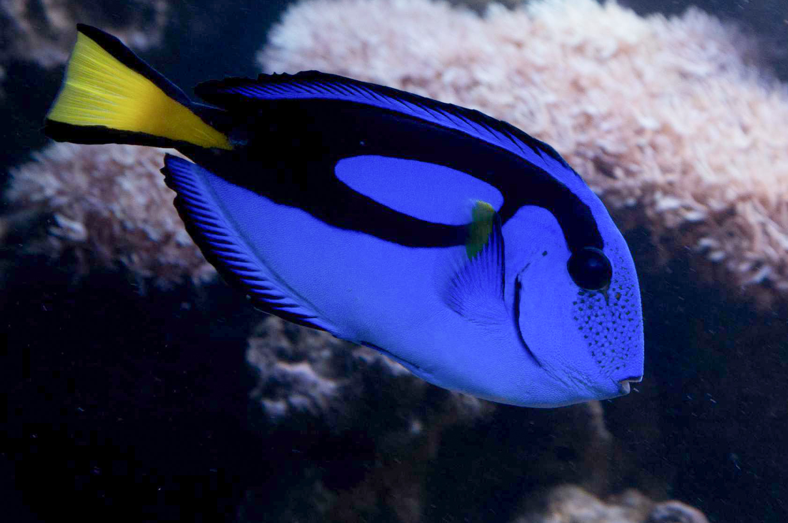
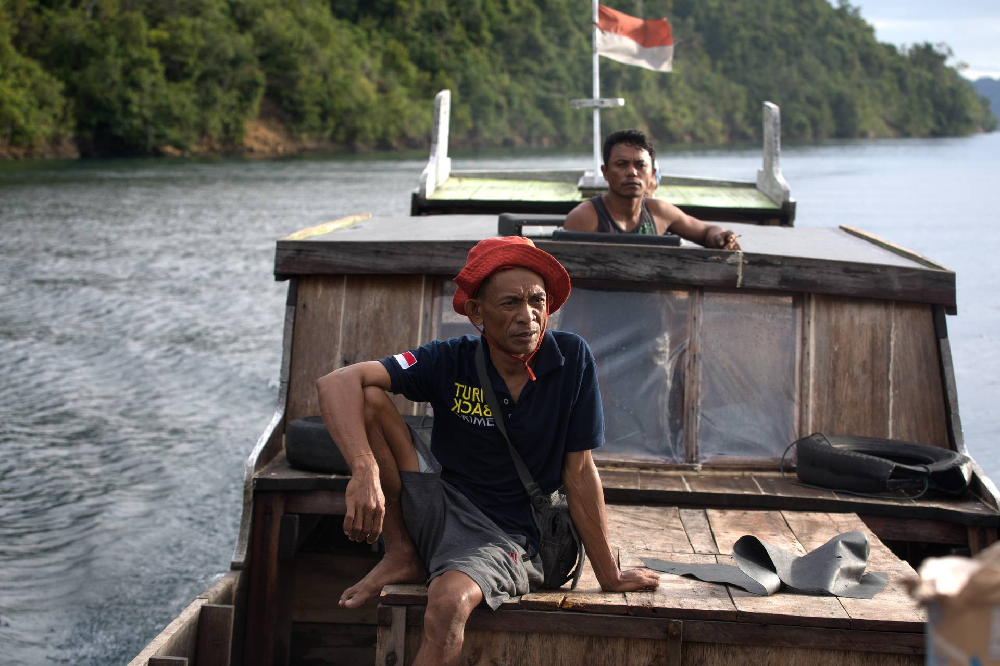

Meet Dory
{kind=link}
Dory is an adorable and absent minded blue tang (Paracanthurus hepatus). This species has a brilliant yellow tail and a bright blue body. In the Indo-Pacific where the blue tang is found, fishers often call this species ‘Letter Six’
because of the black 6-shaped design on its side. The blue tang feeds on plankton and algae, and protects itself with sharp spines on its back. This is the story of Dory as she travels from Indo-Pacific reefs to North American aquariums.
The Reef

The brightly colored coral gardens of the Indo-Pacific are where Dory’s journey begins. While this species lives on reefs from Hawaii to Japan – Indonesia and the Philippines are where most blue tangs are collected. Join us where we first meet
Dory, in her home, the ancient rainforests of the sea.
The Collector

Dory’s global journey is set in motion by an aquarium fisherman, often called an ‘ornamental harvester’ or ‘collector’. Using handmade nets, snorkel masks and fins, collectors are experts at catching up to hundreds of fish per day. Often, collectors
are from lower socioeconomic classes, having little education and relying on aquarium collection as their sole source of income. They are linked to fish in every way, banking on them and other marine resources for food, finances and their futures.
Meet Rasdin, a Sama-Bajau or “Sea-Nomad” from the Bokan Kepulauan District in Central Sulawesi, Indonesia.
The Middleman

The next stop in Dory’s journey is being handed over to middlemen. In many communities, middlemen amass fish from between 7-20 collectors. Often business savvy, the middlemen are the first indication of the global reach of the marine aquarium
trade. Responsible for selling, rearing and transporting the fish for export, middlemen juggle fish biology, community-relations, business and logistics. Meet Sarli, the middleman who works with the Sama-Bajau fishers in Toropot, Indonesia as
he helps move fish from the waters of Indonesia to homes around the world.
The Exporter

The demand for aquarium fish has been steadily on the rise since the expansion of commercial aviation following World War II. The advent of commercial flight made the rapid transport of live fish clear across the globe possible. Today, some
45 nations supply a staggering 2000 species of fish to countries around the world, though they mostly fill aquariums in the United States, Japan and Western Europe. To meet the rising demand for exotic fishes, a new profession was born: the ornamental
fish exporter. Today, some 45 nations supply a staggering 2,250 marine fish species to countries around the world, though they mostly fill aquariums in the United States, Japan and Western Europe. Meet Conrad Chen, one of the largest ornamental
fish exporters in Indonesia, as we explore how the aquarium trade evolves from small-scale fish collection into global big business.
The Importer

Enter the importer who gets reef fish out of the hands of exporters and into the United States. Many companies across the country supply American retail stores with the reef fish of their choosing, but until recently, there was no way of knowing
just how many fish were making this harrowing journey. The Marine Aquarium Biodiversity and Trade Flow online database changes all that. Now we know that more than 10 million
individual fish are imported to the US each year and which supply chains they are coming from.
The Aquarist

This is the final stop in Dory’s global journey – traveling thousands of miles and changing multiple hands before reaching the aquarium of a hobbyist in scenic Colorado Springs, Colorado. Sitting at 6000 feet in the Southern Rocky Mountains,
Colorado Springs may be the last place that you’d expect to find a blue tang. Meet Chris, an avid saltwater aquarist with a meticulously-maintained 600-gallon tank.